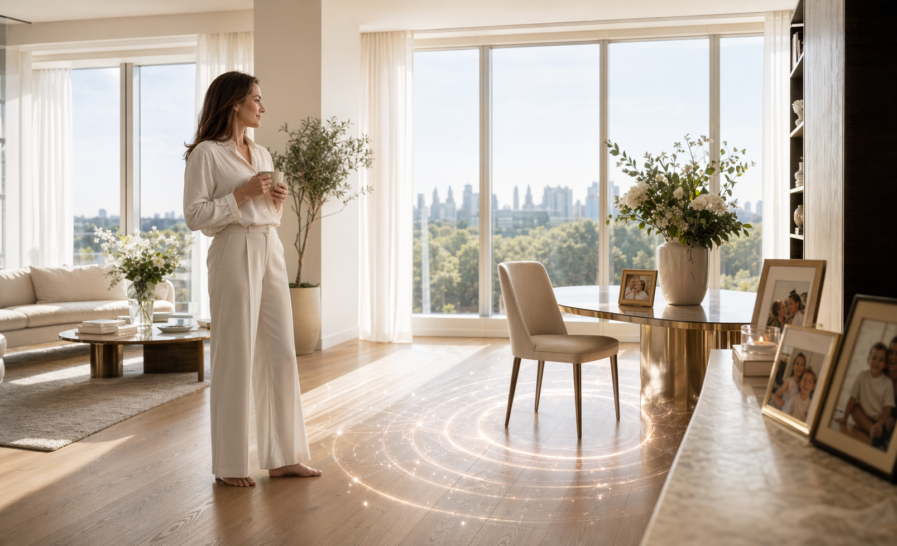

Total environment capture
Visual, auditory and environmental data are mapped across the approved radius.
Some days deserve to be lived again.
Up to two weeks.
Reality isn't perfect. But now, you can go back.
What is Loops?
Loops allows you to revisit and experience recorded time with complete fidelity. Whether it is a once-in-a-lifetime moment or a critical event, Loops preserves every sight, sound and detail exactly as it happened.
Visual, auditory and environmental data are mapped across the approved radius.
Powered by state recording and event modeling, Loops replays precisely as the day occurred.
Encrypted sessions, access-controlled vaults and participant permissions.
Standard Loops run for 24 hours. Eligible extensions may continue for 14 days.
Use Loops for what matters most

Closure
Return to a captured home, street or room with the people approved for entry. Loops gives memory a place to stand.
Our commitment
Vespera works with clients, governments and communities to ensure Loops is used to preserve what matters, not exploit it.
Access plans
Vespera believes emotionally significant moments should be accessible when they matter. Payment plans are available at 38% APR representative, adjusted by deposit, amount financed and access term.
The past isn't gone.
It's just waiting.
Vespera Loops are experiential preservation services. Access, extensions, finance agreements and participant continuity are subject to ethics review, location approval, credit status and client consent.